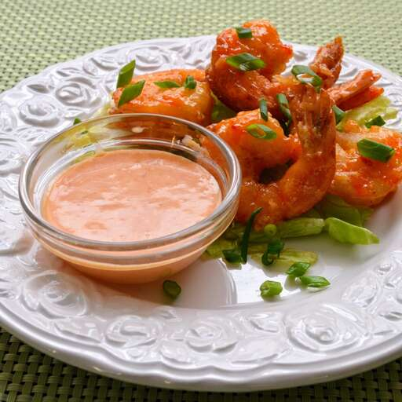

Bang Bang Sauce

Descriptions
This stuff is awesome! My first time making "bang bang" anything, and I was pleasantly pleased! We've only
eaten
at Bonefish Grill one time, and we DID order the bang bang shrimp (because of all of the rave reviews about
it
all over the place). The only change I made to the recipe is that I only used 1/3 cup mayonnaise (as I was
scraping the jar to try to get to 1/2 cup, but I just couldn't get there, and didn't want to run to the
store).
It was perfect for my taste, and I'd probably use that same amount next time. I dredged some shrimp in corn
starch and pan fried those for about 2 minutes, turning half way, and then tossed them in the sauce.
DELICIOUS!
Can't wait to try it with chicken!
Ingredients
- ½ cup mayonnaise
- 2 tablespoons sweet Thai chili sauce
- 1 tablespoon Sriracha sauce
- 1 teaspoon rice vinegar
Directions
-
Stir together mayonnaise, chili sauce, Sriracha, and rice vinegar in a small bowl until smooth.